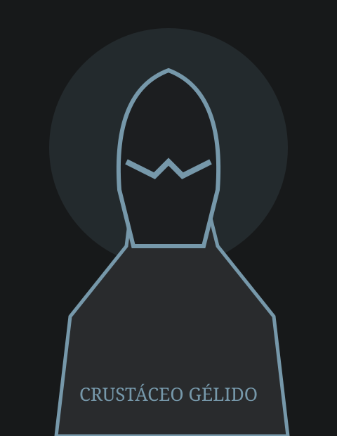

Bestas, cultistas e constructos que os aventureiros já enfrentaram. Estas anotações descrevem apenas o que foi visto em combate ou reconhecido durante a exploração — não são fichas completas nem revelam capacidades desconhecidas.
Cultistas do depósito
Homens e mulheres encobertos por símbolos e velas negras, guardavam o esconderijo atrás da porta do depósito. Seu líder tentou provocar o grupo e falar sobre o Sol imóvel e a chamada Filha da Lua. A iluminação e as sombras do local mudaram durante o confronto.
Enfrentados em Norba
Caranguejos gélidos
Crustáceos de tamanho ameaçador encontrados nas salas alagadas. Surgiram em grupo, atacando de surpresa. A água e o gelo tornaram o combate perigoso; eletricidade foi usada com cuidado para evitar atingir os próprios companheiros.
Ameaça do geloGólem de combate
Uma máquina de combate encontrada inicialmente desativada nas ruínas. Mais tarde despertou dentro de uma câmara, quando as saídas ficaram bloqueadas por gelo. O constructo resistiu aos ataques e congelou um dos aventureiros. Um núcleo cristalino foi atingido, levando à sua desativação e desmoronamento.
DesativadoSoldados de preto e vermelho
Não foram enfrentados diretamente, mas Barnabé relatou ter visto soldados com vestes ou armaduras nas cores preta e vermelha, escoltando uma jovem de asas brilhantes e carregando caixas metálicas marcadas por runas. O escudo apresentava um animal negro sobre vermelho.
Informação recebida de Barnabé